It's difficult to be baroque more difficult to be opaque [installation-action, 2024]
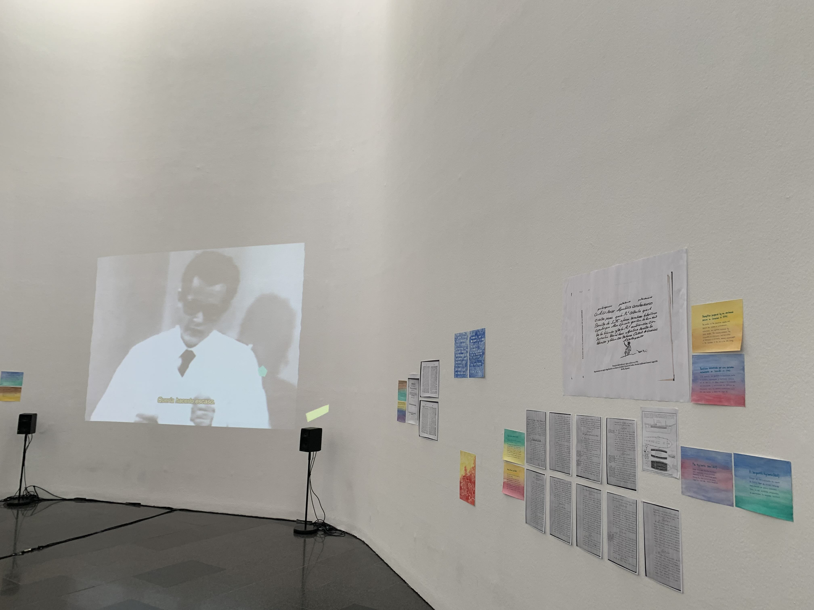
The Wife of Them All
[animation, 2022] 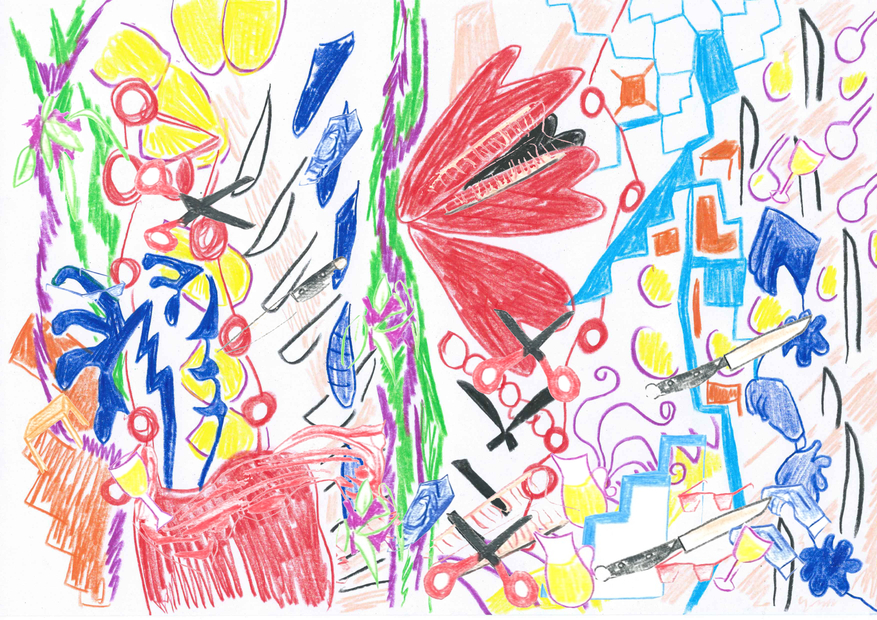
Monument to Networks of Mutual-Aid
[ceramics installation, 2020]
Patrimony of Gestures
[various actions, 2019] 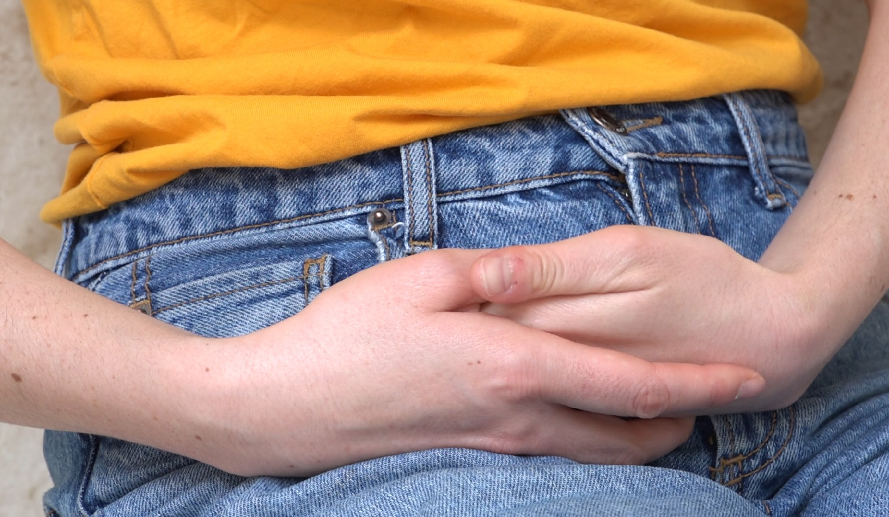
Classic Gold Premium
[web work, 2019]
Networks of Care=Critique
[web + ceramics, 2018-ongoing]
Genetic Privacy For/Or [letter, 2019] 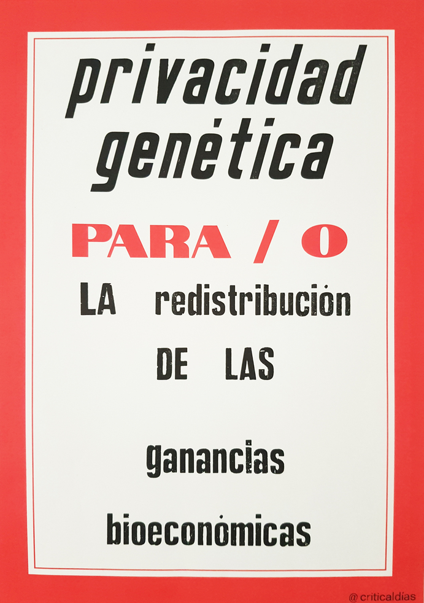
Calling the Magician
[video + performance, 2017] 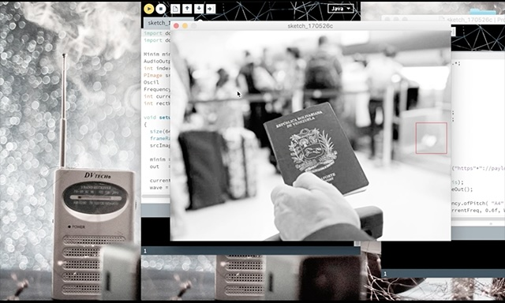
How to Write a Manifesto
[archival project + reading-performance, 2017] 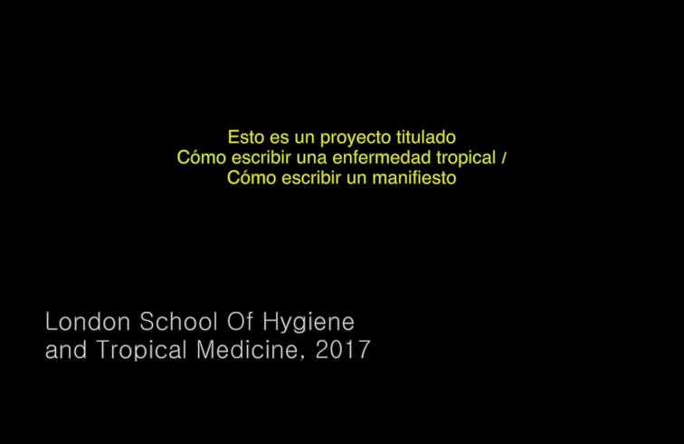
The Wife of Them All
[animation, 2022] 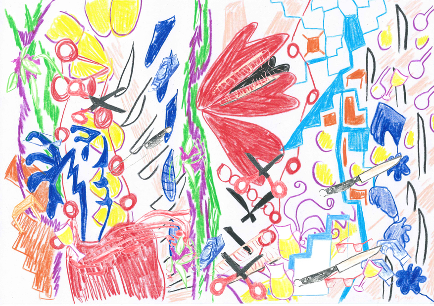
Monument to Networks of Mutual-Aid
[ceramics installation, 2020]
Patrimony of Gestures
[various actions, 2019] 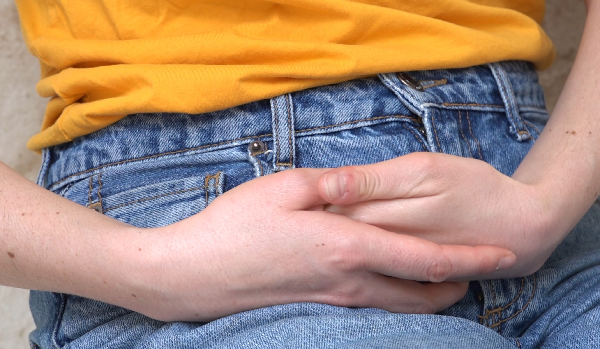
Classic Gold Premium
[web work, 2019]
Networks of Care=Critique
[web + ceramics, 2018-ongoing]
Genetic Privacy For/Or [letter, 2019] 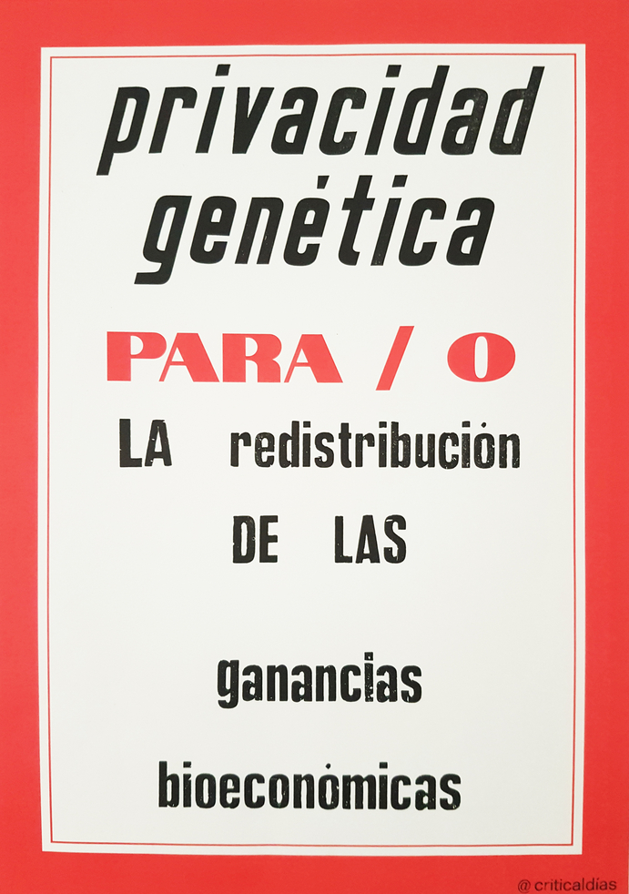
Calling the Magician
[video + performance, 2017] 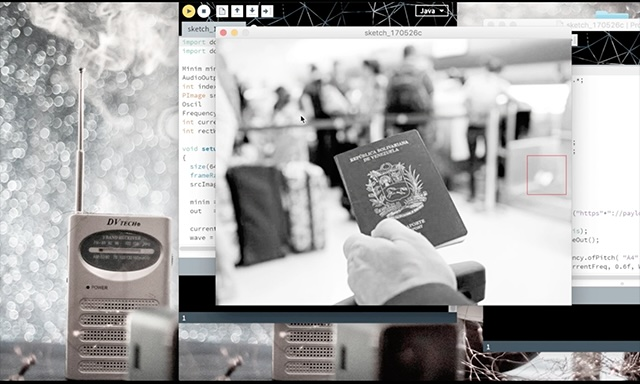
How to Write a Manifesto
[archival project + reading-performance, 2017] 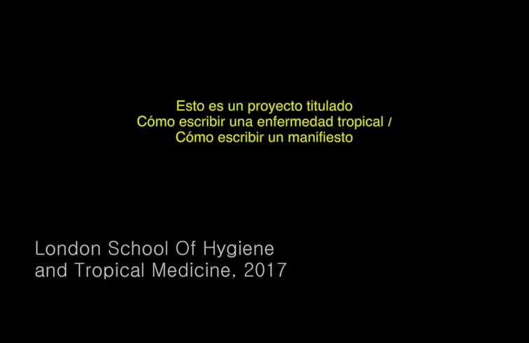
Artist Books
Reinscriptions (2018)
Miquel Casablancas Prize, Sant Andreu Contemporani (collaborative essay with Anyely Marín)
How to Write a Tropical Disease How to Write a Manifesto (2017)
Migratory Times Platform & Uartes, Guayaquil, (archival project + performance with Diásporas críticas, 2017)
How to Write a Tropical Disease How to Write a Manifesto (2017)
Essays & Criticism
The "I"s of Artistic Research
NO NIIN magazine
Gestures and Inscriptions in Ceramics and Sound.
A Combined STS, Queer Marxist and Artistic Research Approach to the Study of Reproductive Politics
RUUKKU. Studies in Artistic Research.
Sappho (1972-1981): Poetry and Reproductive Technologies.
Glasgow Womens Library
Surfacing reproductive turns.
Editorial Concreta
Bodily archives.
Art Asia Pacific Magazine
The manifesto – ‘a little machine for producing desire’.
Performance Research
The real protagonists.
Frieze
The lesser evil.
Review 31
‘I didn’t close containers immediately after use.’
Frieze
During 2015–19 the names of
52 streets in Madrid were changed.
Art Asia Pacific Magazine
Heavenly, escape, exile.
Art Asia Pacific Magazine
'Cohered through sensation, vibration, echoes, speed, feedback loops, recursive folds and feelings' – doesn't it sound like video?
Art Asia Pacific Magazine
A certain future.
Frieze
Silicon: also my story?
Art Asia Pacific Magazine
Constructing decolonial subjects.
Art Asia Pacific Magazine
Where Historical?
Art Asia Pacific Magazine
Metaphorical and literal (shipping) containers.
Frieze
Display meaning scattered, gathered.
Art Asia Pacific Magazine
All play is serious.
Frieze
The regulation of freedom.
Art Asia Pacific Magazine
Breaking unspoken codes.
Art Asia Pacific Magazine (2009)
A Combined STS, Queer Marxist and Artistic Research Approach to the Study of Reproductive Politics